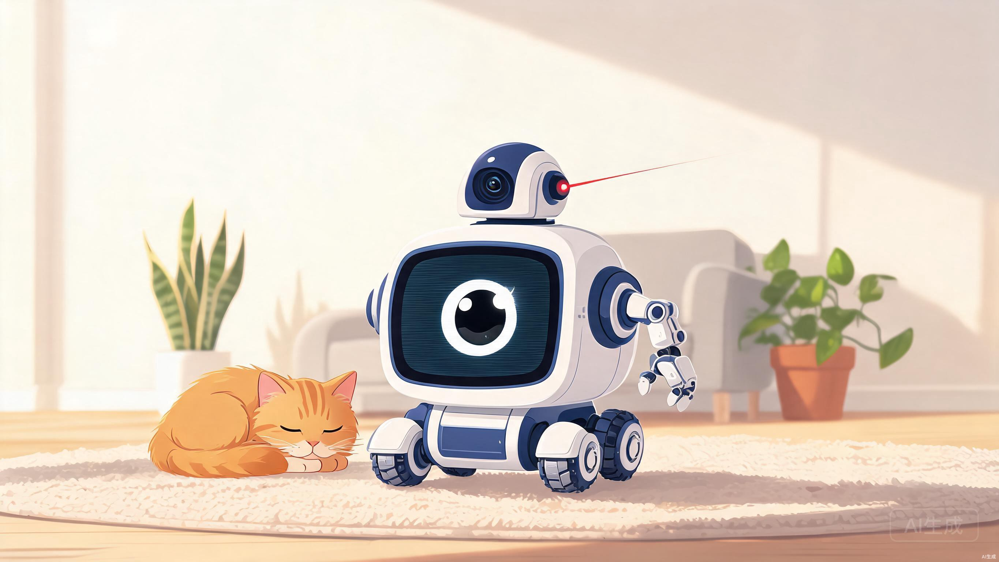

模块化 AI 宠物伴侣与家庭助理机器人 · 基于 NVIDIA Jetson Orin Nano Super 与树莓派双脑架构，重新定义消费级机器人。
一台会成长、会换装的机器人。底盘是通用算力与移动平台，头部按需插拔，从宠物看护到拿取饮料，一机多用。
底盘作为通用计算与移动平台，顶部磁吸接口可插拔更换"宠物看护相机头"或"机械臂/爪子模块"。想看护宠物时插相机，需要干家务时插机械臂，降低用户重复购机成本。
利用 Orin 的强大算力，实现本地高精度 SLAM 导航、宠物行为识别，甚至基于视觉的非接触式宠物生理指标监测（iPPG 心率呼吸估算）。
效仿 Xbox All Access 与 Whoop 的订阅逻辑，采用"硬件免费 / 低价租赁 + 软件算法订阅"模式，锁死长期经常性收入（ARR）。
从宠物焦虑到机器人昂贵，每一组痛点都对应一个可落地的产品决策。
主人外出期间，宠物长期独处易产生分离焦虑，且生病、呕吐、跌倒等异常无法被及时发现。
机器人可自主寻路、互动、投食，并利用视觉 AI 实时监测宠物异常行为，发现险情主动推送告警。
固定式摄像头只能看一个角落，逗宠、投食、巡逻需要分别购买多台设备，成本与占地齐增。
想看护宠物时插上相机模块，需要干家务时插上机械臂模块，降低用户重复购机成本。
具备自主导航与机械臂的机器人单价普遍在 $800–$1200，普通家庭难以承担一次性支出。
采用"硬件零元购 + 24 个月软件服务强制订阅"的捆绑模式，降低用户首次尝试的资金门槛。
手眼协同视觉抓取在传统低端机器人上无法本地运行，云端方案又带来延迟与隐私问题。
搭载 Jetson Orin 芯片，在本地完成手眼协同（Eye-in-Hand）视觉算法，实现饮料等物品的精准识别与抓取。
让一块板子同时处理高强度 AI 计算与底层电机控制极易因 CPU 瞬间满载而导致运动失控。双板协同完美解决安全性与稳定性。
安全性：即使 Orin 算力被大模型或复杂健康监测算法占满甚至卡死，树莓派依然能独立控制电机与机械臂，确保机器人安全停下或避障，不会发生物理碰撞。
接口友好：树莓派拥有极其成熟的 GPIO 生态，非常适合外接各类传感器、舵机控制器、LED 灯板与电源管理模块（BMS）。
成本分级：可推出仅含树莓派的"基础版"底盘，用户后续付费升级时，再邮寄或租赁 Orin Super AI 扩展模块插到机器人背部，实现物理热插拔升级。
处理器：NVIDIA Jetson Orin Nano Super（8GB，67 TOPS）+ Raspberry Pi 5（4/8GB）。
传感器：单线固态激光雷达（LiDAR） + 深度相机 + 惯性测量单元（IMU）。
驱动：四轮麦克纳姆轮全向移动，便于在狭窄室内与宠物用品间穿梭。
接口：顶部统一磁吸式快速插拔物理接口（集成 PCIe / USB 3.0 / 电源 / CAN 总线）。
屏幕：正面 4–5 英寸 LCD 触摸屏，显示"小吵闹"标志性单眼表情与视频通话画面。
底盘通用，配件可插拔。三种核心模块覆盖看护、抓取、投喂三类高频场景。
宠物看护与健康监测头
小吵闹机械臂
自动投食器
《无主之地》"小吵闹"采用独轮自平衡设计，但独轮 / 两轮自平衡底盘在抓取重物（如饮料）时会面临极大的重心偏移与控制算法挑战。因此在外观设计上保留其幽默感与单臂、大屏幕特征，但在底盘硬件上采用更稳定的麦克纳姆轮或多轮驱动底盘，以确保越障与运输物品时的稳定性。
从被动监控到主动服务，三个典型场景勾勒 BuddyBot 在家庭中的日常价值。
机器人日常在家自主巡逻，利用 Orin Super 的 67 TOPS 算力执行本地 YOLO 算法寻找宠物。找到宠物后，通过 iPPG（成像光电容积脉搏波）技术，在宠物安静或睡眠时，用高清摄像头捕捉其面部或无毛区（如兔耳）皮肤的微弱颜色变化，本地估算心率与呼吸频率，异常时向主人手机 App 报警。
用户发出语音指令："Buddy，去厨房帮我拿一罐无糖可乐。" Orin Super 运行轻量化多语言大模型，解析语义并拆解任务。机器人自动导航至厨房，通过机械臂上的小型深度相机识别易拉罐，手眼协同算法计算抓取位姿，精准抓取并运送给主人。
自主检测宠物无聊指数（如长时间趴着、转圈），自动开启激光红外笔或抛洒零食，并录制宠物玩耍的 VLOG 自动剪辑后推送给用户，让主人不在家也能"云撸宠"。
效仿微软 Xbox All Access 与运动健康手环 Whoop 的租赁逻辑，降低尝鲜门槛，同时锁死长期经常性收入（ARR）。
合约期满硬件归用户所有；可降级为基础本地版，或以 $9.99/月续订高级 AI 云服务。
硬件配件不强制包含在基础合约中，按需扩展，灵活组合。
项目初期提供两种选择：① 全款买断版（适合极客），以 $599–$699 售卖硬件，赠送 3 个月订阅；② 合约版（适合普通家庭），与金融机构或分期服务商合作，将硬件部分做无息分期处理，由金融机构将硬件款项一次性垫付，显著降低创业团队的现金流风险。
现有海外竞品无法同时兼顾"高算力自主避障导航""模块化机械臂抓取"与"非接触式健康监测"——这正是 BuddyBot 的差异化护城河。
| 竞品 / 型号 | 核心功能 | 定价模式 | 优势 | 劣势 / 我方机会 |
|---|---|---|---|---|
| US BuddyBot（本项目） | 模块化机械臂 + 非接触健康监测 + 本地 VLM | $0 首付 + $29.99/月 | 双脑架构 · 67 TOPS · 可热插拔 | — |
| Enabot EBO X | 4K 巡逻相机、智能避障、GPT-4o 语音、双向通话 | $899–$1199 买断 | 导航成熟、外观萌化、语音交互极强 | 无模块化无机械臂，一次性购买门槛高 |
| Rocki Robot | 远程遥控、激光逗宠、麦克纳姆轮、零食投喂 | $199 买断 | 价格极低、外壳耐摔、趣味性强 | ≈0 算力无自主规划导航，无法监测健康 |
| Ogmen ORo | 自主巡逻、训练指导、健康记录、在线兽医、投食 | $799 买断 + 订阅 | 专注犬类行为与健康训练算法 | 体积庞大、不可模块化、无机械臂、成本高 |
| PetPace / Fi / Whistle | 穿戴式项圈监测心率、体温、活动量 | $150 + ~$15/月 | 监测精准度高、全天候佩戴 | 需佩戴猫兔排斥，我方 iPPG 提供"无感"监测 |
想法在商业与产品概念上极具吸引力，但落地仍需克服以下关键挑战。
Jetson Orin 系列开发板采购成本不低，加上激光雷达、深度相机、电机与电池，BOM 约 $250–$350。若采用"硬件免费"模式，前期垫资压力极大，极度考验现金流。
提供全款买断版（$599–$699，赠 3 个月订阅）与合约版并行；与分期服务商合作，由金融机构一次性垫付硬件款，将现金流风险转移至金融侧。
拿取易拉罐需足够力矩与精细控制，若机器人移动时机械臂乱晃，可能碰撞宠物或家具，造成伤害或损坏。
机械臂仅在执行特定任务时伸出，平时处于完全收纳与闭锁状态；限制最大夹持力与关节电机力矩，确保即使夹到宠物手脚也不会造成伤害。
兔子与部分猫咪对移动机器、电机噪音极为敏感，可能产生应激反应，导致产品体验崩塌。
采用静音无刷电机，外壳使用仿毛皮、硅胶等温暖触感材质；软件设计"静音潜行模式"，当雷达检测到宠物紧张或警惕时，主动降低移动速度与电机转速。
Orin 识别出杯子位置后，如何快速命令树莓派控制机械臂抓取？跨板协同若延迟过高将导致抓取失败。
Orin 与树莓派通过千兆以太网口直连，采用 ROS 2 内部通讯机制。ROS 2 在分布式多板通信上非常成熟，通信延迟可控制在毫秒级。
Orin Nano Super 最大功耗约 15W，树莓派 5 约 5–10W，双板加电机舵机，电池消耗极快，续航可能不足。
引入"休眠/唤醒"机制：常态下 Orin 进入超低功耗休眠，仅由树莓派监测异常；配置 4S 18650 电池组（50–70Wh），保障 3–4 小时活跃运行，配合红外引导自动回充。
BuddyBot 不仅仅是一台机器人，而是一套会随家庭一起成长的模块化智能体。硬件降低门槛，软件持续创造价值——这是消费级机器人走向千家万户的可行路径。